Menu: Cadastros (o item do menu e o título da tela dizem "Cadastro de equipamentos") · Situação do manual: Em ajuste (prints e conferência de 17/11/2026) · Fonte dos prints: versão nova.
Para que serve
Cadastra os equipamentos da fábrica: descrição, tag, patrimônio, modelo, série, fabricante, fornecedor, capacidade de produção, valor, datas de fabricação e de operação, categoria, tipos de manutenção e a área proprietária. O equipamento ativo é a base para outros módulos (no legado: Produção e Controle da Qualidade; a confirmar na versão nova).
Antes de começar (o que precisa existir)
| O que precisa existir | Para quê | Onde se cadastra |
|---|---|---|
| Descrição, tag, capacidade de produção e valor | São obrigatórios | Esta tela |
| Fabricante (escolhido na lista ou "OUTROS" com o nome digitado) | Sem fabricante o equipamento não grava, embora o campo não esteja marcado com asterisco (DV-PRI-N-020) | Cadastros > Pessoa jurídica (tipo Fabricante) |
| Fornecedor, se for informar | Lista de empresas do tipo Fornecedor | Cadastros > Pessoa jurídica (tipo Fornecedor) |
| Categoria, se for informar | Ao escolher a categoria, a tela marca sozinha os tipos de manutenção dela | Cadastros > Categoria de equipamento |
| Nível da estrutura funcional, se for informar | Árvore "Direção/Sub-Direção/Seção" | Cadastros > Estrutura funcional |
Passo a passo
- Abrir a tela. No menu Cadastros, clique em Cadastro de equipamentos. A tela abre com o filtro Código, Descrição, Tag e Ativo (TODAS, SIM, NÃO) e os botões PESQUISAR, LIMPAR, IMPRIMIR e X (o botão do Excel). Digite parte da descrição (por exemplo "T.") e clique em PESQUISAR. A lista mostra CÓDIGO, DESCRIÇÃO, TAG, ATIVO e os ícones Editar, Excluir e Log.
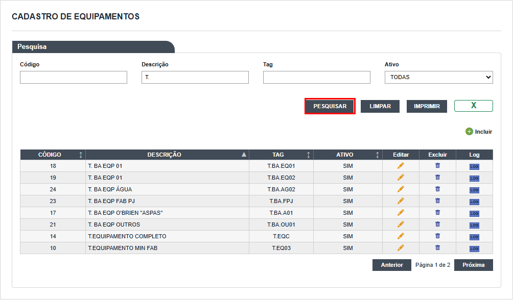
A imagem mostra o filtro Descrição com "T." e a lista de resultado, cada linha com lápis, lixeira e ícone LOG.
- Incluir. Clique no ícone verde Incluir. Abre o formulário, que começa pelo quadro "Equipamento".
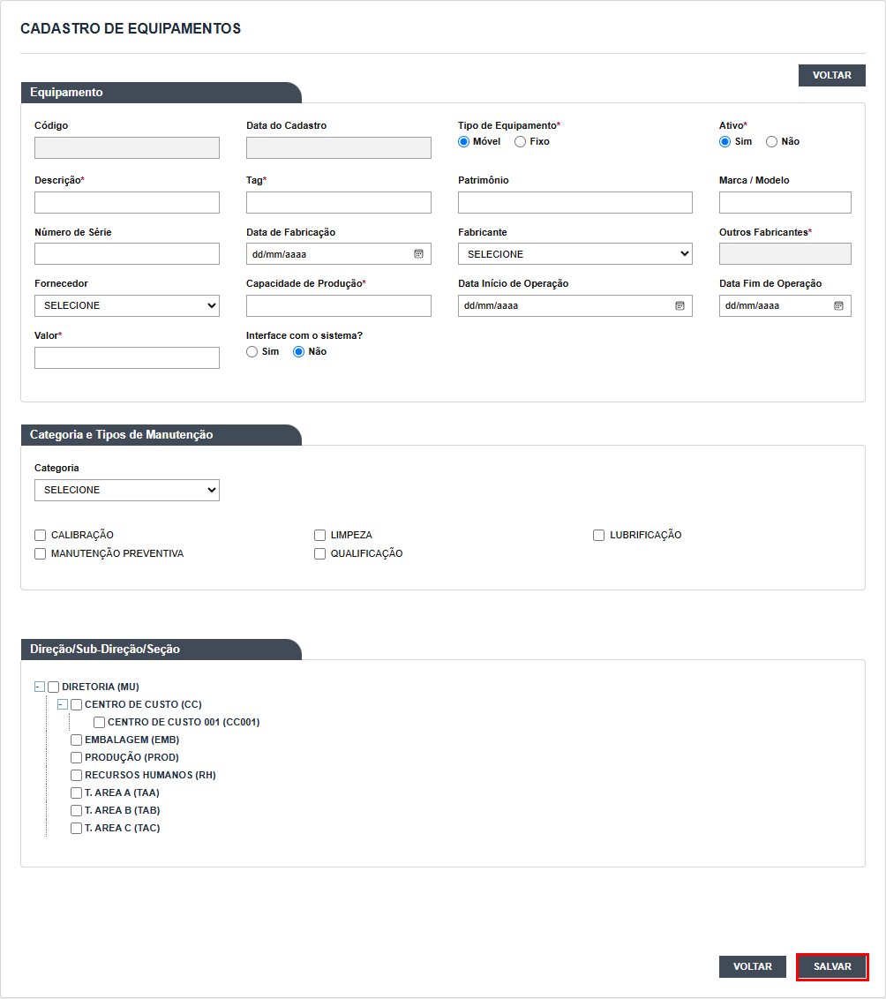
A imagem mostra, na ordem: Código e Data do Cadastro (bloqueados); Tipo de Equipamento* (Móvel já marcado, ou Fixo); Ativo* (Sim já marcado); Descrição*; Tag*; Patrimônio; Marca / Modelo; Número de Série; Data de Fabricação (calendário); Fabricante (SELECIONE); Outros Fabricantes* (bloqueado até escolher "OUTROS"); Fornecedor; Capacidade de Produção*; Data Início de Operação; Data Fim de Operação; Valor*; e "Interface com o sistema?" (Não já marcado). Abaixo vêm o quadro "Categoria e Tipos de Manutenção" e a árvore "Direção/Sub-Direção/Seção", até o botão SALVAR (a imagem mostra o formulário inteiro). A árvore traz DIRETORIA, CENTRO DE CUSTO, CC001, EMBALAGEM, PRODUÇÃO, RECURSOS HUMANOS e T. AREA A, B e C; em Ambientes a árvore tem mais níveis (ponto para validar: se a árvore daqui está cortada ou se há rolagem).
- Salvar vazio (para conhecer as mensagens). Clique em SALVAR, no fim do formulário, sem preencher. Aparece a faixa "Preencha os campos obrigatórios antes de salvar." e uma mensagem sob cada campo.
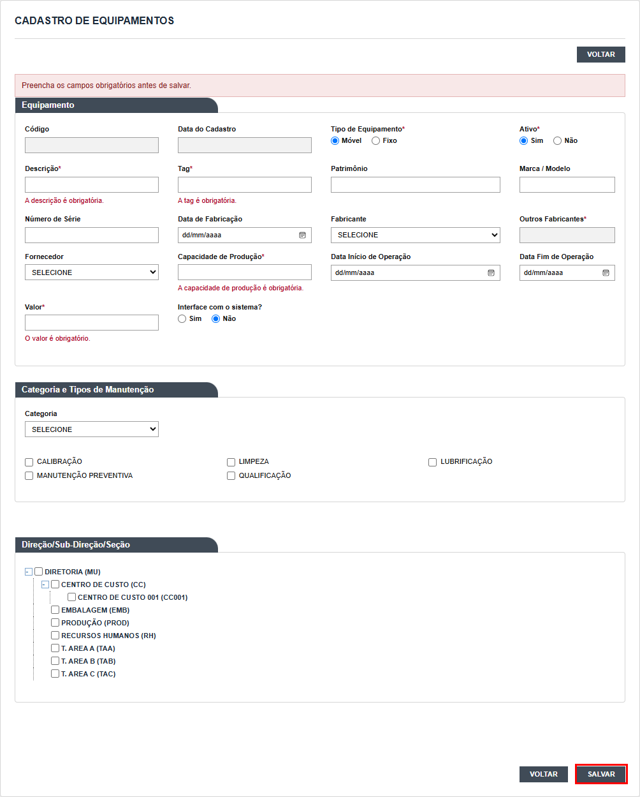
A imagem mostra a faixa e as quatro mensagens de campo, em vermelho: "A descrição é obrigatória.", "A tag é obrigatória.", "A capacidade de produção é obrigatória." e "O valor é obrigatório.".
- Preencher. Preencha descrição, tag, capacidade e valor, e escolha o Fabricante (ou "OUTROS" e digite o nome em "Outros Fabricantes").
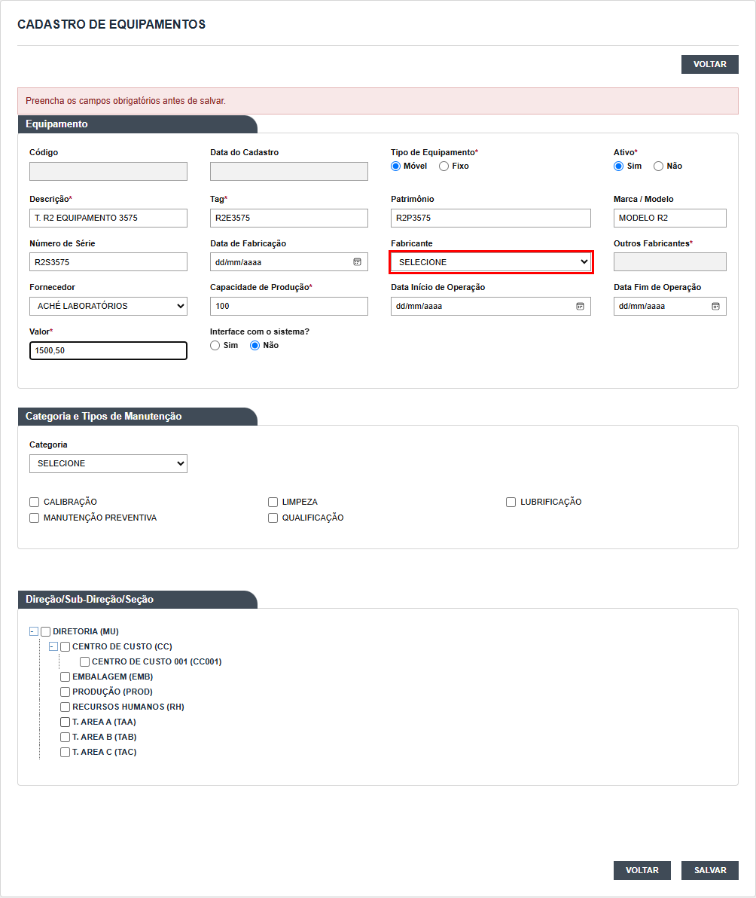
A imagem mostra o formulário inteiro preenchido, com o Fabricante ainda em "SELECIONE" (campo marcado).
- Salvar e confirmar. Clique em SALVAR. O sistema pergunta "Confirma a inclusão do item?". Clique em SIM.
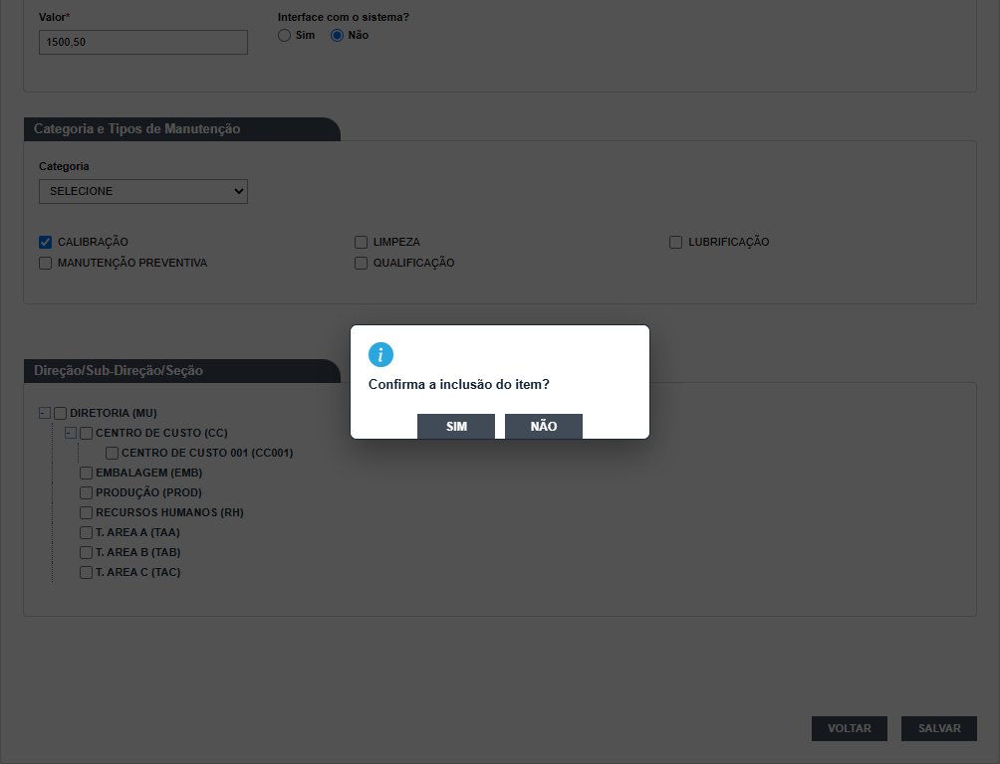
A imagem mostra o pop-up "Confirma a inclusão do item?". Como o fabricante não foi escolhido, o sistema não grava e mostra a faixa vermelha do servidor:
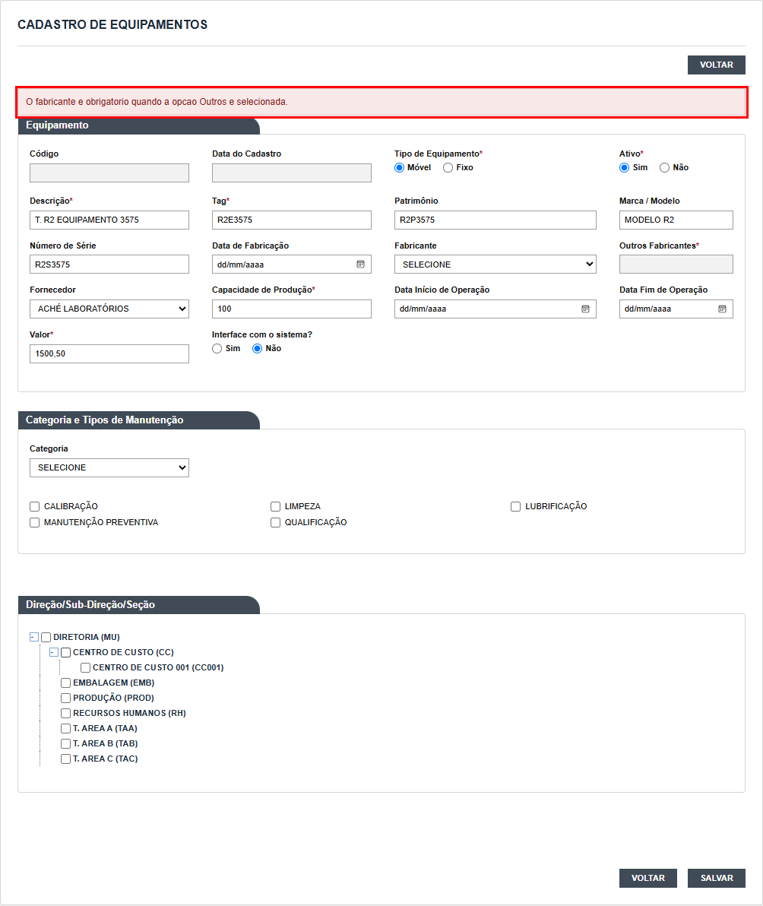
A imagem mostra a faixa "O fabricante e obrigatorio quando a opcao Outros e selecionada." (sem acento, e dizendo "Outros" mesmo sem "Outros" escolhido). Escolhendo o fabricante, o equipamento grava:
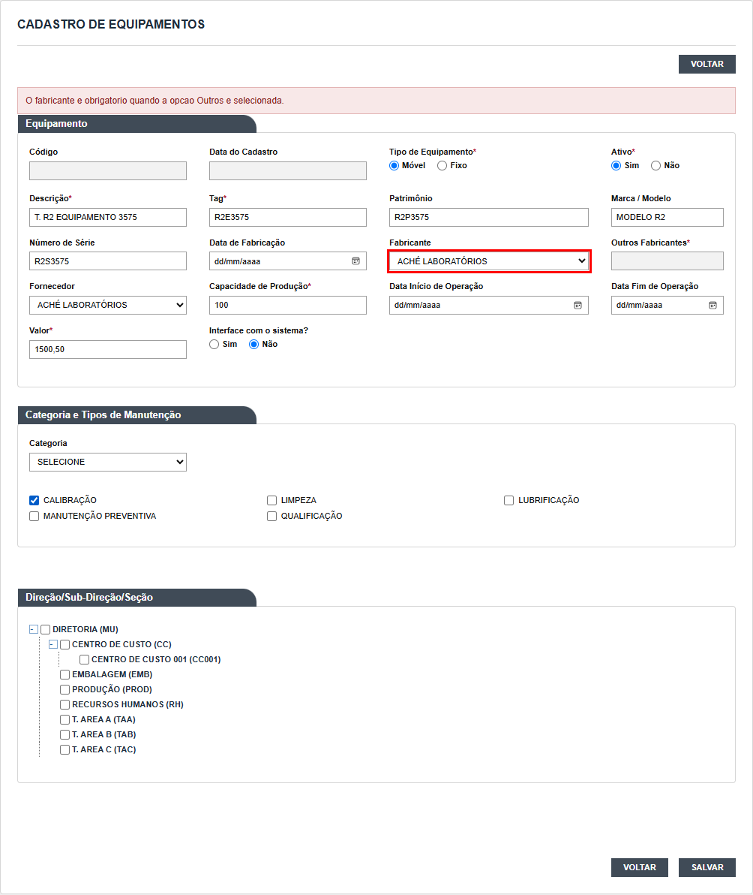
A imagem mostra o formulário inteiro com o Fabricante escolhido e um tipo de manutenção marcado. Depois do SIM:
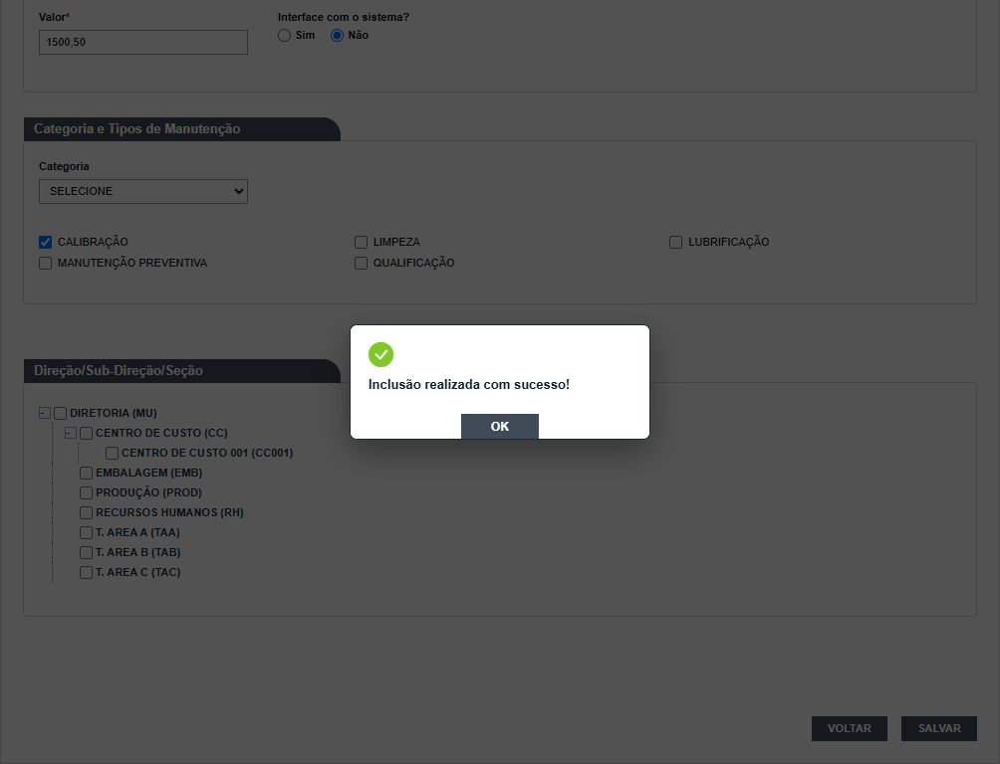
A imagem mostra o pop-up "Inclusão realizada com sucesso!". Depois de gravar a inclusão, a tela volta para a lista (em Ambientes ela fica no formulário).
- Abrir um equipamento para consultar ou alterar. Na lista, clique no lápis (Editar). Não existe ícone separado de "visualizar".
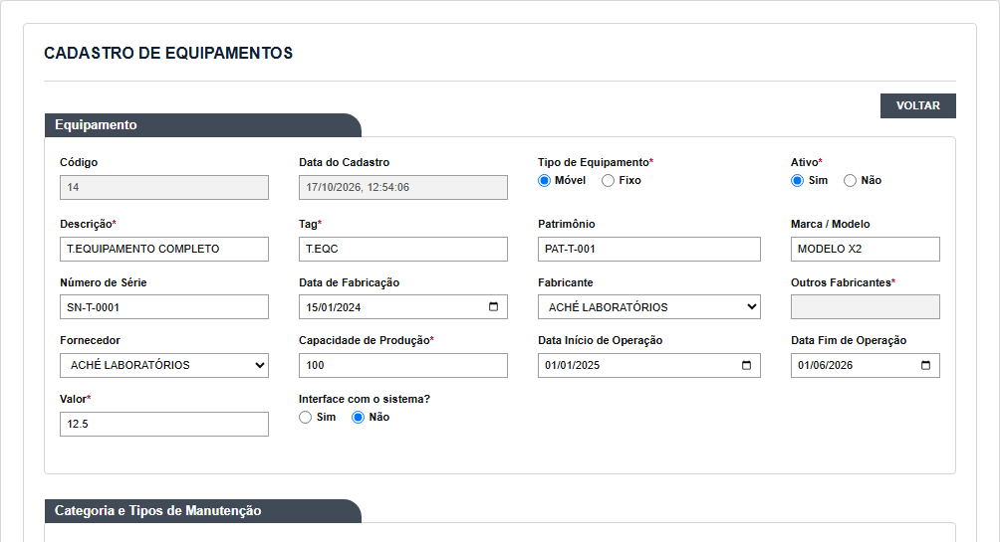
A imagem mostra o equipamento de código 14 aberto, com Fabricante e Fornecedor preenchidos, datas e o Valor "12.5" (com ponto, não vírgula).
- Alterar. Mude o dado, digite a Justificativa (obrigatória) e salve. O sistema pergunta "Confirma a alteração do item?" e mostra "Alteração realizada com sucesso!". Sem a justificativa, recusa com a faixa e, sob o campo, "A justificativa é obrigatória." (aqui sem o ponto e vírgula que existe em Ambientes).
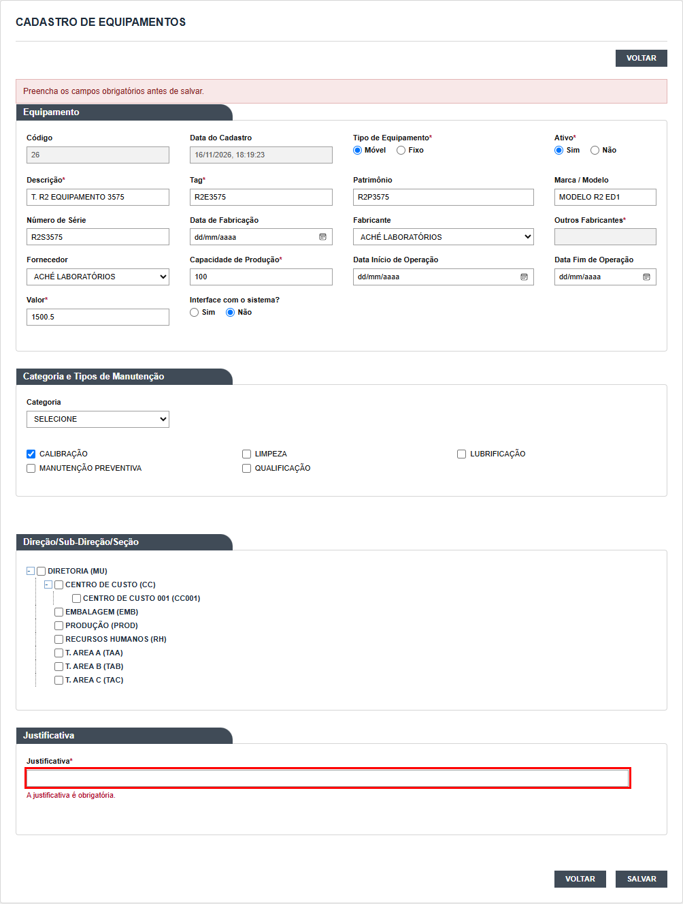
A imagem mostra o formulário de alteração com a mensagem "A justificativa é obrigatória." sob a Justificativa.
Atenção ao Valor (DV-PRI-N-013): o sistema multiplica o Valor por 10 somente na primeira edição depois da inclusão, mesmo que você não mexa no campo (1500,50 vira 15005). A segunda e a terceira edição não multiplicam de novo (conferido em 17/11/2026). Confira o Valor depois da primeira edição. Ao abrir para editar, o Valor aparece como 1500.5:
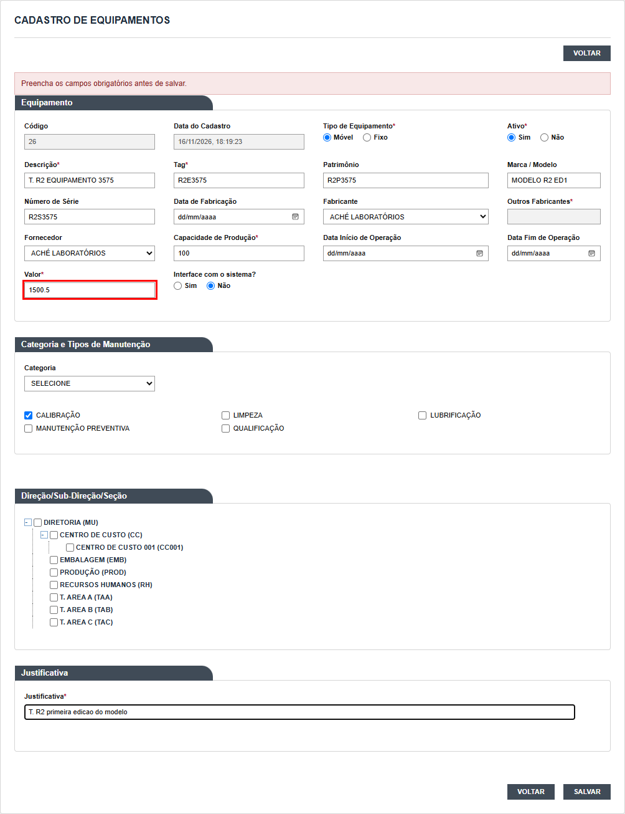
A imagem mostra o campo Valor, marcado, com 1500.5, antes da primeira edição. Depois de salvar só o Modelo:
A imagem mostra o campo Valor, marcado, com 15005. Depois de salvar a segunda edição:
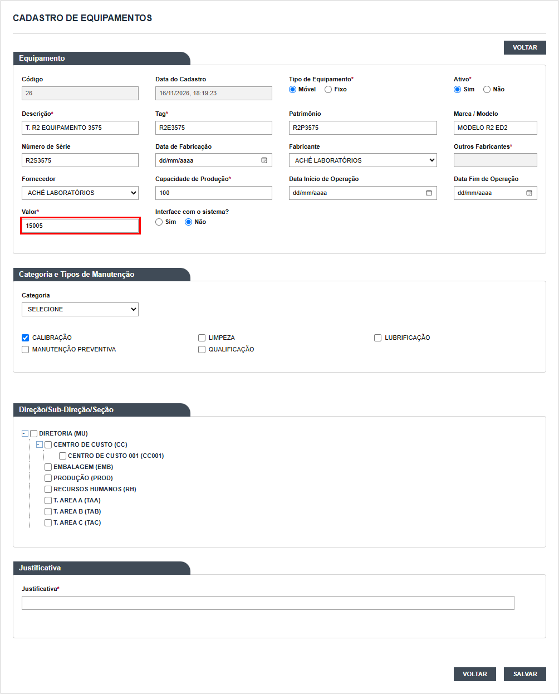
A imagem mostra o Valor ainda em 15005: não multiplica de novo. Imagens de evidência de 16/11/2026 (a inclusão com o valor 1500,50 e o histórico):
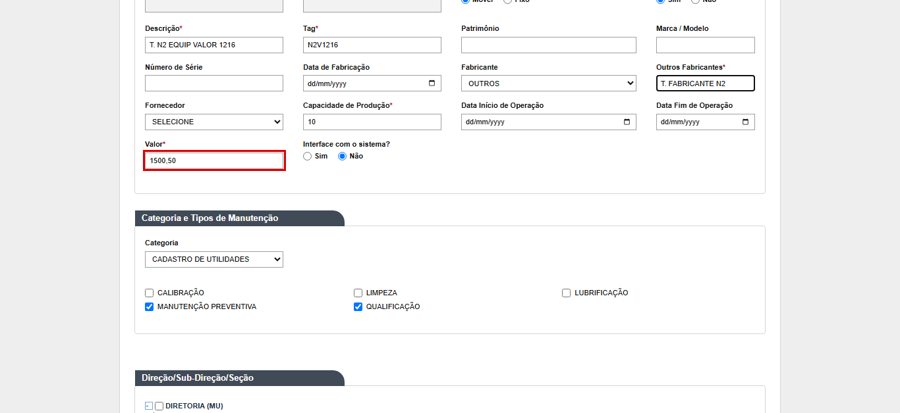
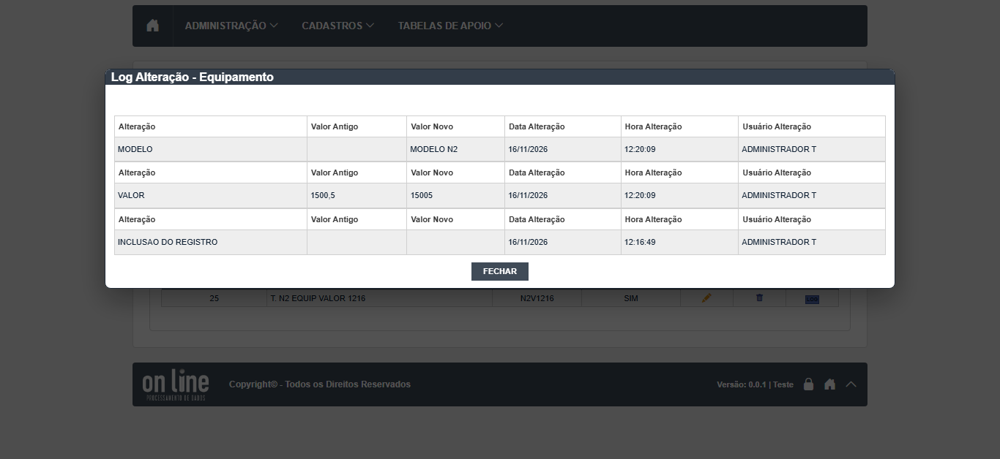
A segunda imagem mostra a janela "Log Alteração - Equipamento" com a linha VALOR 1500,5 → 15005, sem justificativa.
- Inativar. Marque Ativo = Não, com justificativa (exigida). A lista passa a mostrar ATIVO = NÃO. Atenção: o sistema não avisa se o equipamento está em uso em outros módulos.
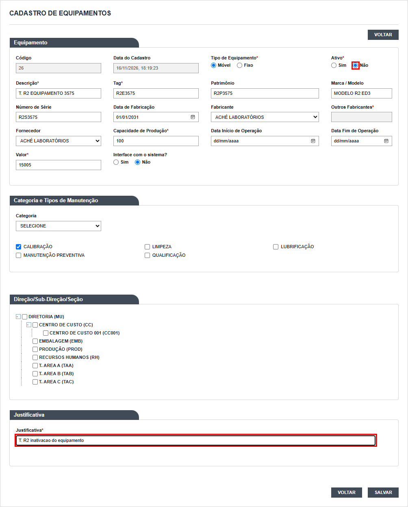
A imagem mostra o formulário com Ativo = Não e a Justificativa preenchida.
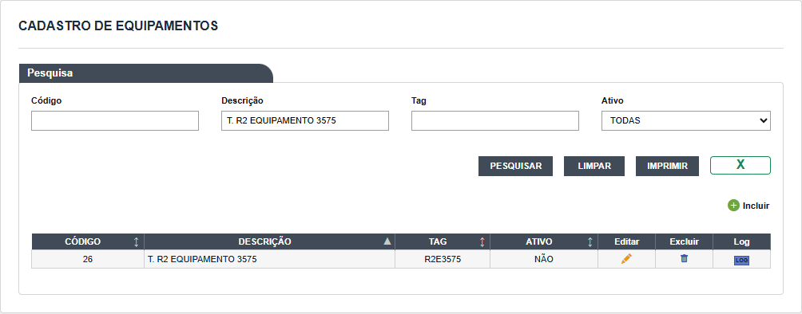
A imagem mostra a lista com ATIVO = NÃO na linha do equipamento.
- Excluir. Na lista, clique na lixeira. A pergunta é só "Confirma a exclusão do item?" (SIM e NÃO), sem justificativa.
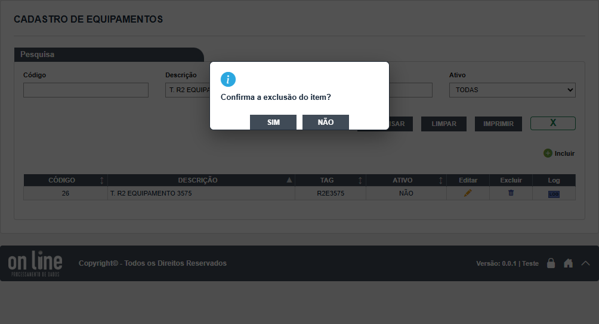
A imagem mostra o pop-up "Confirma a exclusão do item?" sobre a lista (nesta imagem, NÃO foi escolhido). Com SIM, o equipamento é excluído (no legado a exclusão era recusada quando havia referências) e nenhuma mensagem de sucesso aparece (revalidação de 16/11/2026; a exclusão em si não foi refeita em 17/11/2026): o equipamento simplesmente some da lista.
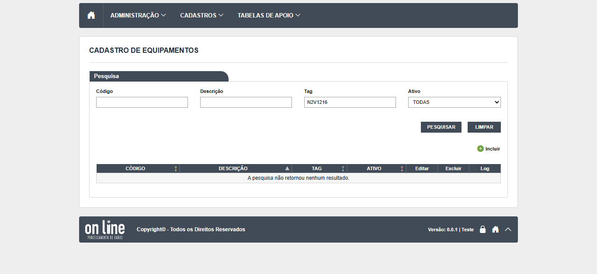
A imagem mostra a pesquisa pela tag do equipamento excluído devolvendo "A pesquisa não retornou nenhum resultado.", sem nenhum aviso de exclusão.
-
Ver o histórico. Na lista, clique em Log.
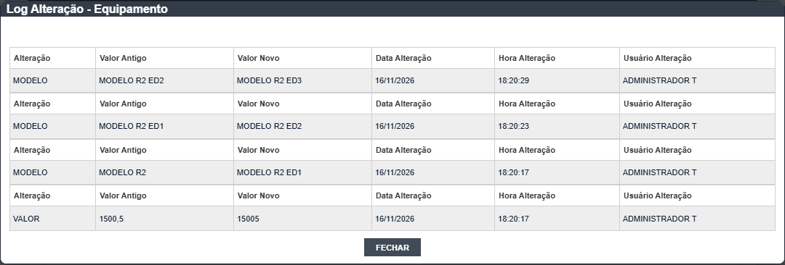
Histórico do equipamento · clique para ampliar A imagem mostra o Log de um equipamento novo, com as linhas MODELO (três edições) e VALOR 1500,5 para 15005, com data, hora e usuário. Não há justificativa no histórico (diferente de Ambientes). Neste equipamento recém-criado o Log também não trouxe a linha "INCLUSAO DO REGISTRO" (candidato a defeito R2B-03; em 16/11/2026, outro equipamento mostrou essa linha, ver imagem de evidência do passo 7: ponto para validar).
-
Imprimir e Excel. IMPRIMIR gera o PDF; X baixa a planilha. Os dois ignoram o filtro da tela: com o filtro "T. R2 EQUIPAMENTO" a lista mostrou 1 linha, a planilha trouxe 22 linhas (as mesmas da pesquisa sem filtro) e o PDF trouxe todos os equipamentos (DV-PRI-N-039). Diferente de Ambientes, onde a planilha respeita o filtro. O PDF também traz "SUA LOGO AQUI" (DV-PRI-N-028).
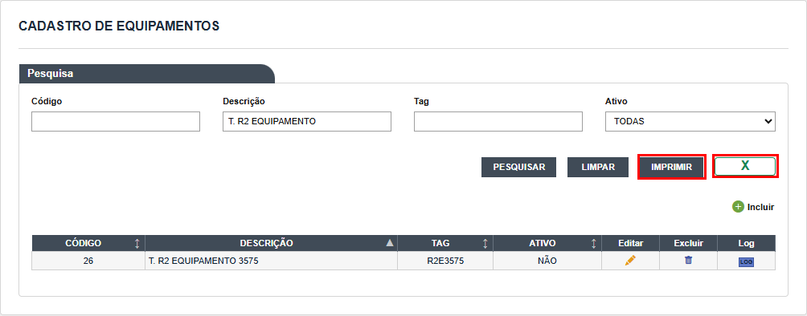
Lista filtrada, com IMPRIMIR e X · clique para ampliar A imagem mostra a lista filtrada (1 linha) com IMPRIMIR e X marcados.
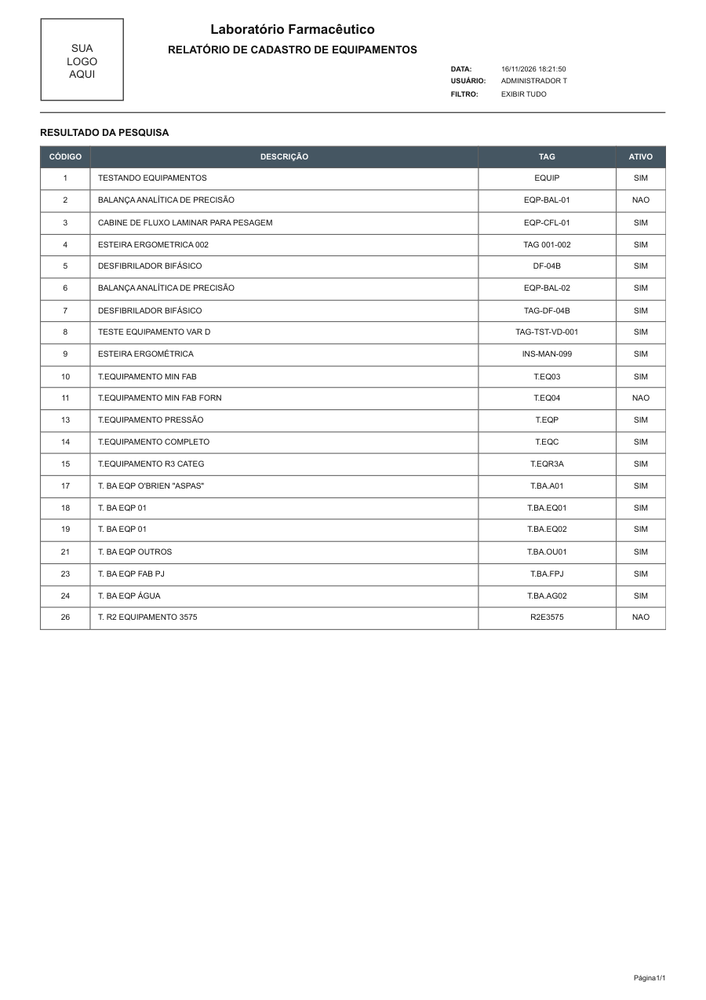
PDF ignora o filtro · clique para ampliar A imagem mostra o PDF com todos os equipamentos, "FILTRO: EXIBIR TUDO" e o quadro "SUA LOGO AQUI".
Ícones e botões da lista
| Ícone ou botão | O que faz | Quando aparece |
|---|---|---|
| PESQUISAR | Lista os equipamentos que batem com o filtro | Sempre |
| LIMPAR | Esvazia o filtro | Sempre |
| IMPRIMIR | Gera o PDF | Para quem pode imprimir |
| X (Excel) | Baixa a planilha .xlsx | Para quem pode exportar |
| Incluir (ícone verde "+") | Abre o formulário vazio | Para quem pode incluir |
| Lápis (Editar) | Abre o equipamento | Em cada linha |
| Lixeira (Excluir) | Pergunta e exclui | Em cada linha, para quem pode excluir |
| Log | Abre o histórico | Em cada linha, para quem pode consultar o log |
| Setas nos títulos | Ordenam a lista | Sempre |
Botões e ações
| Botão | O que faz | Observação |
|---|---|---|
| PESQUISAR / LIMPAR | Filtra / limpa | |
| Incluir | Abre o formulário | |
| SALVAR | Pergunta "Confirma a inclusão do item?" (ou alteração) e grava | |
| VOLTAR | Volta à lista sem gravar | No alto e no pé do formulário |
| Lápis, Lixeira, Log | Abrem o equipamento, excluem, mostram o histórico | |
| IMPRIMIR e X | PDF e planilha | Os dois ignoram o filtro (DV-PRI-N-039) |
Mensagens do sistema
| Mensagem | Quando aparece |
|---|---|
| Preencha os campos obrigatórios antes de salvar. | Faixa ao salvar com campo vazio; também para tag acima de 30 |
| A descrição é obrigatória. | Descrição vazia ou acima de 255 |
| A tag é obrigatória. | Tag vazia |
| A capacidade de produção é obrigatória. | Capacidade vazia |
| O fabricante e obrigatorio quando a opcao Outros e selecionada. | Fabricante em branco |
| Tag ja existe! | Tag repetida |
| A data de inicio de operacao nao pode ser maior que a data de fim de operacao. | Datas invertidas |
| Confirma a inclusão do item? | Ao salvar um registro novo |
| Confirma a exclusão do item? | Ao clicar na lixeira |
| A pesquisa não retornou nenhum resultado. | Lista vazia |
| Inclusão realizada com sucesso! / Alteração realizada com sucesso! | Depois de gravar |
| Confirma a alteração do item? | Ao salvar uma alteração |
| O valor é obrigatório. | Valor vazio |
| A justificativa é obrigatória. | Alterar ou inativar sem justificativa |
| A data de fim de operacao nao pode ser maior que a data atual. | Fim de operação no futuro |